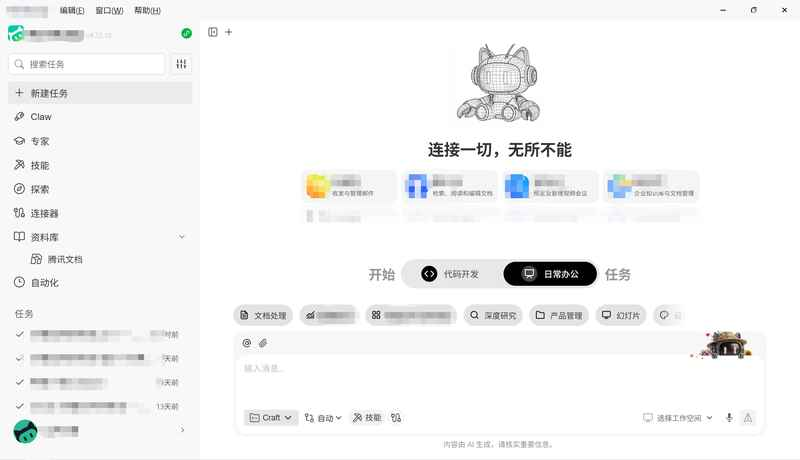
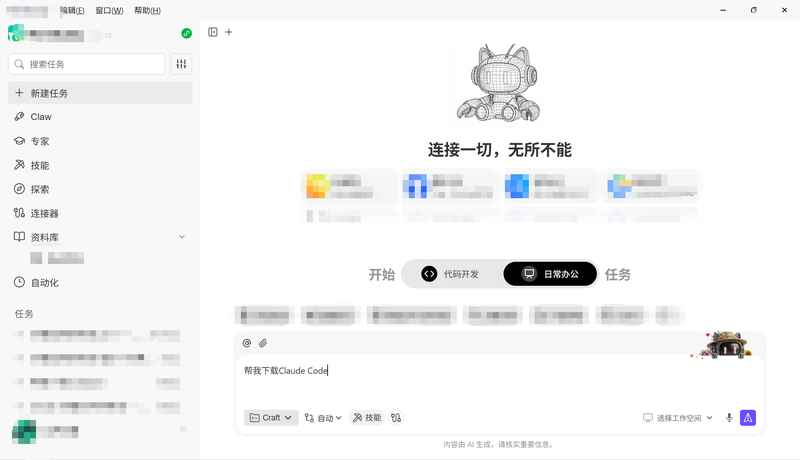
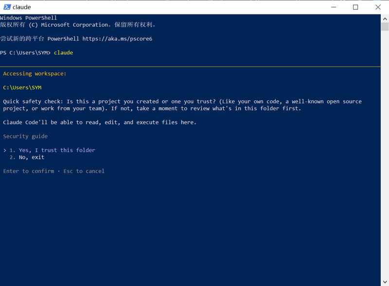
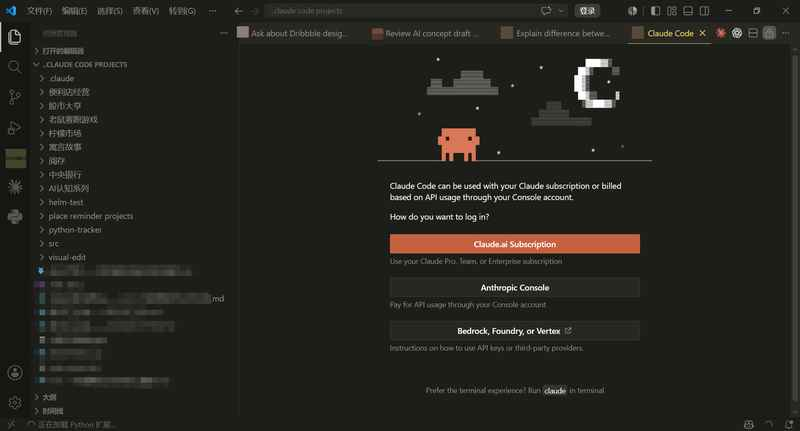
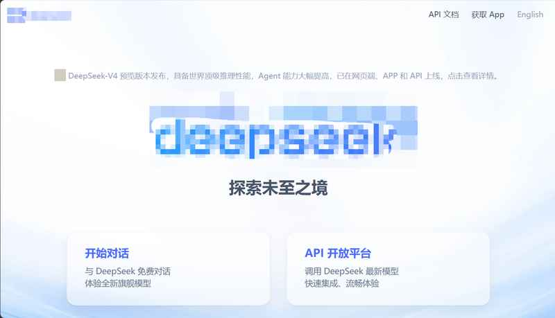
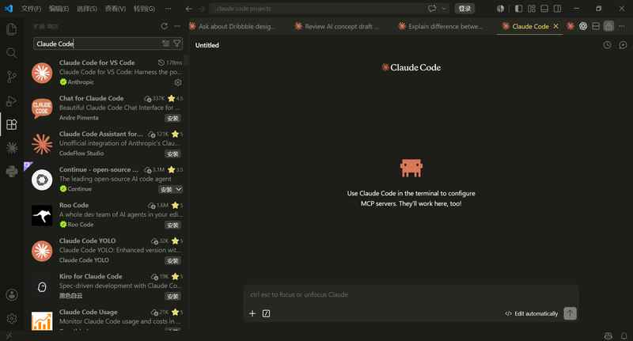
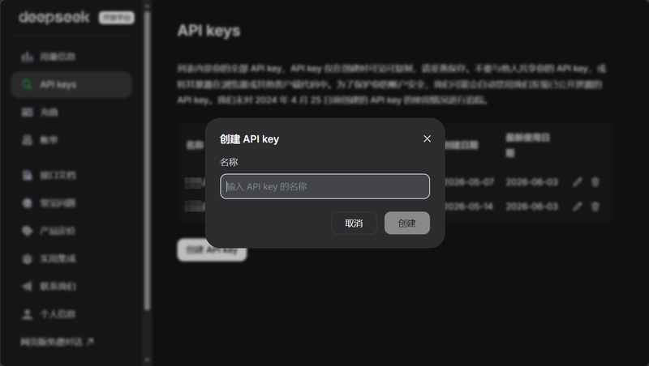
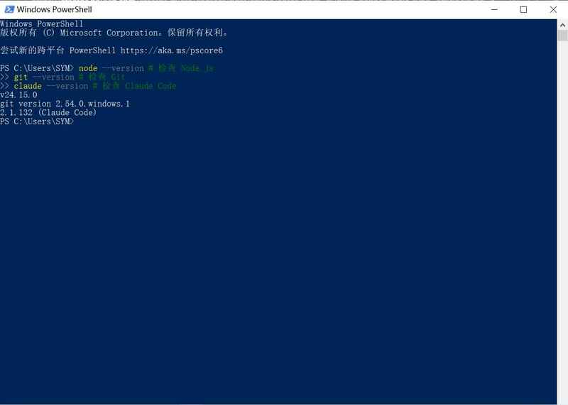

① 先说清楚一件事——Agent 产品 = "壳" + "大脑"
Agent 产品 = Agent 框架（壳）+ 大模型（大脑）
🚗 用开车来理解
| 东西 | 相当于… | 说明 |
|---|---|---|
| Claude Code | 一辆好车（车壳） | 负责"怎么干活"——读文件、写代码、执行命令 |
| AI 大模型 | 发动机 + 汽油 | 负责"动脑思考"——理解你说的话、想出答案 |
Claude 的原生大模型在国内被封了。车是好车，但原厂发动机加不了油。
解决办法：换一个国产发动机——DeepSeek。中国公司做的，国内直接能用，价格便宜。
还有一个比喻：Claude Code 原版订阅每月 20 美元（约 140 人民币），DeepSeek 充 10 块钱能用好几个月。好车配国产油，便宜又好用。
① 用 Workbuddy 装好 Node.js、Git、Claude Code（说人话就行，它帮你装）
② 装 ccswitch 转换器，接入 DeepSeek 国产大模型
③ 装 VS Code，给 Claude Code 配上好看的界面
② 一步一步来：完整安装教程
第一部分：准备工作 & Claude Code 安装
借助 Workbuddy 帮你装好一切——你说人话，它帮你执行命令。
Workbuddy 也是一款 Agent 产品。我们借助它来完成安装——你说人话（"帮我装 Node.js"），它在后台帮你执行命令。就像请了一个免费技术员。登陆就送积分，足够完成全部下载。
-
0
下载 Workbuddy，进入对话框
官网下载 Workbuddy → 安装 → 注册登录 → 看到对话框。
👆 Workbuddy 的对话框界面。你只需要像发微信一样打字，它就会帮你干活。✅ 检查点：能看到 Workbuddy 的对话框和输入框吗？
-
1
安装 Node.js（地基）
在 Workbuddy 对话框输入：帮我安装 Node.js，然后耐心等待。🏗️ 为什么需要 Node.js？
Claude Code 本身就是一个 Node.js 应用——源码用 TypeScript 写的，编译后跑在 Node.js 上。没有 Node.js，Claude Code 根本跑不起来。就像没有 Python 跑不了 .py 文件。Node.js 装完会自动带 npm（包管理工具），待会装 Claude Code 就靠它。
✅ 检查点：Workbuddy 提示 "Node.js 安装完成" 了吗？
-
2
安装 Git（安全带）
在 Workbuddy 对话框输入：帮我下载 Git🔒 为什么需要 Git？
Git 让 Claude Code 能安全地改代码：① 每次改代码前让你确认改了什么（看 diff）② 管理项目状态。没有 Git，Claude Code 就不给你看改了什么，直接改。
一句话：Node.js 让 Claude Code 能跑，Git 让 Claude Code 能安全地改代码。Git ≠ GitHub：Git 是你电脑上的版本控制工具（离线可用）；GitHub 是托管代码的网站（需要联网）。✅ 检查点：Git 装好了吗？
-
3
安装 Claude Code（车壳）
在 Workbuddy 对话框输入：帮我下载 Claude Code
👆 Workbuddy 在后台帮你跑 npm 命令安装。耐心等几分钟。✅ 检查点：看到 "Claude Code 安装完成" 了吗？
第二部分：验证安装——确认三样东西都装好了
打开 PowerShell，敲三个命令，看到版本号就说明装好了。
-
4
验证三个版本号
打开 PowerShell——右键开始菜单 → 选择 "Windows PowerShell"。分别敲三个命令，每个都会返回版本号：
node --versiongit --versionclaude --version有版本号 = 装好了。没报错就没问题。

👆 三个命令，三个版本号。一个不少就说明全部装好。✅ 检查点：三个命令都返回了版本号吗？
-
5
第一次启动 Claude Code
在 PowerShell 里输入claude，按回车。 👆 终端内的 Claude Code 已经可以打开，但还不能用——因为还没有接入大模型。
👆 终端内的 Claude Code 已经可以打开，但还不能用——因为还没有接入大模型。 -
6
按 1 选择信任
如果出现选择提示，按键盘上的 1，然后按回车。 👆 输入 1，按回车。选择信任。⚠️ 注意：此时你问它"你是什么模型"，它可能回答 "Claude Opus 4.7"——这是卡了，其实你只装了一个空壳，还没有接入任何大模型。接下来给它装发动机。
👆 输入 1，按回车。选择信任。⚠️ 注意：此时你问它"你是什么模型"，它可能回答 "Claude Opus 4.7"——这是卡了，其实你只装了一个空壳，还没有接入任何大模型。接下来给它装发动机。
第三部分：安装 ccswitch + 接入 DeepSeek（换国产发动机）
装一个转换器，把 DeepSeek 的 API Key 填进去，改个模型名，保存——搞定。
-
7
安装 ccswitch（模型转换器）
回到 Workbuddy 对话框，输入：帮我安装 ccswitch注意：一定输入ccswitch（连在一起），不要写 "cc switch"，容易报错。ccswitch 是什么？一个帮你切换 AI 模型的小工具。就像手机换 SIM 卡——换一张卡就能用不同运营商。通过它，Claude Code 可以使用 DeepSeek。✅ 检查点：ccswitch 装好了吗？
-
8
去 DeepSeek 官网拿"钥匙"（API Key）
打开浏览器，按以下步骤操作：- ① 打开 DeepSeek 官网：浏览器输入
chat.deepseek.com，注册登录。手机号注册，跟注册微信差不多。 - ② 进入 API 开放平台：登录后，点右上角的 "API 开放平台"。
 👆 点右上角的 "API 开放平台" 按钮。
👆 点右上角的 "API 开放平台" 按钮。 - ③ 进入 API Keys 页面：左侧菜单找到并点击 "API Keys"。
 👆 点击 API Keys。
👆 点击 API Keys。 - ④ 创建 API Key：点 "创建 API Key"，随便起个名字。
 👆 名称随便写（比如"我的电脑"），点创建。
👆 名称随便写（比如"我的电脑"），点创建。 - ⑤ 🚨 关键步骤：复制并保存 API Key！
 👆 ⚠️ 这个弹窗关掉后就永远看不到完整 Key 了！现在立刻：用鼠标选中 → 右键复制 → 打开记事本 → 粘贴 → 保存到桌面，文件名就叫 "DeepSeek钥匙.txt"。🚨 马上做！不保存的话，这个 Key 就丢了，只能重新创建。
👆 ⚠️ 这个弹窗关掉后就永远看不到完整 Key 了！现在立刻：用鼠标选中 → 右键复制 → 打开记事本 → 粘贴 → 保存到桌面，文件名就叫 "DeepSeek钥匙.txt"。🚨 马上做！不保存的话，这个 Key 就丢了，只能重新创建。
✅ 检查点：API Key 已经复制到记事本里了吗？是以 sk- 开头的一长串吗？
- ① 打开 DeepSeek 官网：浏览器输入
-
9
配置 ccswitch——把钥匙交给转换器
打开 ccswitch，按以下步骤配置：- ① 打开 ccswitch：找到 Claude Code 的图标 → 点它 → 点右侧的 +（加号）按钮。
 👆 打开 ccswitch，点 Claude Code 图标，再点右侧 + 号。
👆 打开 ccswitch，点 Claude Code 图标，再点右侧 + 号。 - ② 选择 DeepSeek：在供应商列表里找到并点击 DeepSeek。
 👆 点击 DeepSeek。
👆 点击 DeepSeek。 - ③ 往下滑，填写配置：
 👆 往下滑，看到 API Key 输入框、请求地址等。供应商名称和官网链接 ccswitch 已帮你填好。
👆 往下滑，看到 API Key 输入框、请求地址等。供应商名称和官网链接 ccswitch 已帮你填好。字段 填写内容 说明 API Key sk-xxxxxxxx... 粘贴你刚才保存的那串钥匙 请求地址 https://api.deepseek.com/anthropic 已填好，不用改 API 格式 — 不需要修改 认证字段 — 不需要修改 - ④ 修改模型名称：往下滑，找到 5 个模型名，把原来的
DeepSeek-V3.2改成deepseek-v4-flash[1m]。 👆 只需要修改这 5 个模型名。改成
👆 只需要修改这 5 个模型名。改成deepseek-v4-flash[1m]。 👆 改完以后的样子。[1m] 表示 100 万上下文 tokens，不加的话 AI "记忆力"会变差。
👆 改完以后的样子。[1m] 表示 100 万上下文 tokens，不加的话 AI "记忆力"会变差。
点 "保存"。到这一步，Claude Code 的安装和接入 API 全部完成。
✅ 检查点：API Key 填好了吗？模型名改了？保存了吗？
- ① 打开 ccswitch：找到 Claude Code 的图标 → 点它 → 点右侧的 +（加号）按钮。
-
10
验证——看看是不是真的能用了
回到 PowerShell，输入claude启动。如果问是否信任，按 1 然后回车。启动后，输入：你是什么模型？
 👆 恭喜！回答里提到了 DeepSeek——说明换发动机成功！现在可以体验目前实机体验口碑最好的 Agent 框架了。
👆 恭喜！回答里提到了 DeepSeek——说明换发动机成功！现在可以体验目前实机体验口碑最好的 Agent 框架了。💰 如果提示"余额不足"
这是最常见的问题——API Key 没有付款。回到 DeepSeek 官网 → API 平台 → 充值。性价比很高，最近又降价了。充 10 块钱够用几个月。
✅ 检查点：AI 回答里有 "DeepSeek" 这几个字吗？
恭喜！Claude Code 已经可以在国内正常使用了
但黑窗口打字不太方便——接下来装一个好看的界面。
第四部分：安装 Visual Studio Code（给车装个好驾驶舱）
终端只有一行命令行，不能复制输出的内容，不适合日常使用。VS Code 就像一个"可视化驾驶舱"。
-
11
安装 VS Code
回到 Workbuddy，输入：帮我安装 Visual Studio Code，耐心等待。建议：装好后，桌面新建一个文件夹叫"我的项目"，以后所有跟 AI 的合作都在里面。
👆 打开 VS Code。左边红框内是项目文件，右边是交互界面。建议新建一个或多个文件夹作为项目保存地址。✅ 检查点：VS Code 打开了吗？能看到左侧文件列表吗？
-
12
安装 Claude Code 插件——把 AI 接入 VS Code
到现在仅仅有了项目，Claude Code 还没有接入 VS Code。继续：- ① 点击左侧扩展按钮：左边一排图标，找到四个方块那个（扩展），点它。

👆 左边竖排图标中，点击扩展按钮（四个方块）。 - ② 搜索并安装 Claude Code：搜索框输入 Claude Code，找到作者为 Anthropic 的插件，点安装。

👆 搜索 Claude Code，装作者是 Anthropic 的那个。 - ③ 回到资源管理器：点左侧第一个图标（📁 资源管理器），大部分项目都将在这里进行。

👆 回到资源管理器页。左侧是项目文件，右侧稍等几秒就会变成 Claude Code 对话框。 - ④ 最终效果：等几秒，右侧出现 Claude Code 对话框。

👆 左侧项目文件 + 右侧 Claude Code 对话框。到这一步，所有内容全部完成！拥有可视化界面、接入 API Key，可以尽情使用了。
✅ 检查点：右侧能看到 Claude Code 的对话输入框吗？
- ① 点击左侧扩展按钮：左边一排图标，找到四个方块那个（扩展），点它。
到这一步，所有安装和配置已全部完成！
你有了可视化界面 + 接入 API Key + 国产发动机。
现在可以尽情地玩 Claude Code 了——让它帮你写东西、清理 C 盘、做任何你能想到的事。
尽可能发挥你的想象力。
③ 再看一遍：完整流程
4 大阶段 + 12 个步骤，约 30 分钟。一次搞定，永久能用。
Claude Code = 🚗 车壳 · DeepSeek = ⛽ 发动机 · ccswitch = 🔌 转换器 · VS Code = 🖥️ 驾驶舱
④ 最容易遇到的 5 个问题
Claude Code 没装好或 PowerShell 需要重新打开。
claude --version 验证。如果没有版本号，回 Workbuddy 重装。90% 是因为 API Key 没填对或没余额。
创建 API Key 后关了弹窗，再也看不到。
模型名可能没加 [1m]。
deepseek-v4-flash[1m]——后面的 [1m] 不能漏（不加的话 AI "记忆力"会差很多）。网络慢或积分不够。
⑤ 做一遍：完整动手练习
12 步练习清单（按顺序来）
☐ 1. 让 Workbuddy 装 Node.js
☐ 2. 让 Workbuddy 装 Git
☐ 3. 让 Workbuddy 装 Claude Code
☐ 4. 命令行里验证三个版本号
☐ 5. 输入 claude 首次启动
☐ 6. 按 1 选信任
☐ 7. 让 Workbuddy 装 ccswitch
☐ 8. 去 DeepSeek 官网创建 API Key → 保存记事本
☐ 9. 打开 ccswitch → 选 DeepSeek → 填 Key → 改模型名 → 保存
☐ 10. 输入 claude → 问"你是什么模型" → 看到 DeepSeek
☐ 11. 让 Workbuddy 装 VS Code
☐ 12. VS Code 里装 Claude Code 插件 → 回到资源管理器
💡 全部搞定了？现在就试试让它帮你做一件事——"帮我写一段朋友圈文案介绍我的生意"。
⑥ 速查卡
🔧 国内免魔法使用 Claude Code 速查卡
| 阶段 | 操作 | 命令 / 地址 |
|---|---|---|
| 🛠️ | Workbuddy | 官网下载 → 注册登录 |
| 📦 | 装 Node.js / Git / CC | 在 Workbuddy 说"帮我装 XXX" |
| ✅ | 验证版本 | node --version · git --version · claude --version |
| 🔄 | 装 ccswitch | Workbuddy 说"帮我安装 ccswitch"（连写） |
| 🔑 | 拿 DeepSeek API Key | chat.deepseek.com → API 开放平台 → API Keys |
| ⚙️ | 配置 ccswitch | Key: sk-xxx / 地址: api.deepseek.com/anthropic / 模型: deepseek-v4-flash[1m] |
| 🧪 | 验证成功 | "你是什么模型？" → 回答提到 DeepSeek |
| 💻 | 装 VS Code | Workbuddy 说"帮我安装 Visual Studio Code" |
| 🧩 | 装 CC 插件 | VS Code 扩展面板 → 搜 Claude Code → 作者 Anthropic → 安装 |
| 💰 | 充值 | API 平台 → 充值 → 微信/支付宝（10 块用几个月） |
⑦ 检查一下：你学会了吗？
- 我理解了 Agent 产品 = "壳" + "大脑"，Claude Code 是壳，DeepSeek 是大脑
- 我学会了用 Workbuddy——说人话就能让它帮我装东西
- 我装好了 Node.js、Git、Claude Code（三个都有版本号）
- 我装好了 ccswitch，创建了 DeepSeek API Key，配置成功
- 我验证成功了——问"你是什么模型"回答提到了 DeepSeek
- 我装好了 VS Code 和 Claude Code 插件，有了好看的界面
预备课全部结束！下一阶段：应用课——AI 能帮你做什么 →